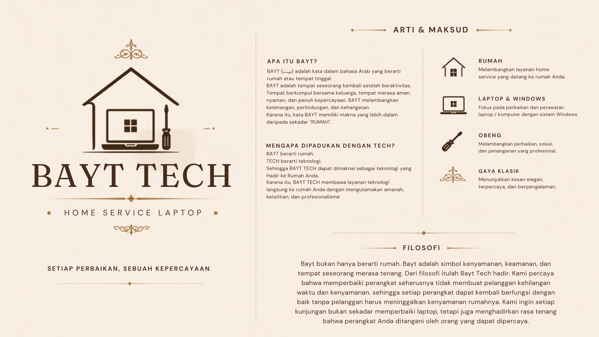

BAYT TECH
Setiap Perbaikan, Sebuah Kepercayaan.
Setiap Perbaikan, Sebuah Kepercayaan.
HOME SERVICE LAPTOP
BAYT TECH hadir membantu berbagai kebutuhan laptop dan komputer Anda. Mulai dari servis, install ulang Windows, upgrade SSD & RAM, cleaning, backup data, hingga home service langsung ke rumah, kantor maupun kampus.
Kami siap membantu berbagai kebutuhan laptop dan PC Anda, langsung di rumah, kantor maupun kampus.
Perbaikan berbagai kerusakan hardware maupun software secara profesional.
Lihat DetailTingkatkan performa laptop menjadi lebih cepat, ringan, dan responsif.
Lihat DetailMembersihkan debu serta mengganti thermal paste agar suhu tetap stabil.
Lihat DetailDokumentasi nyata dari layanan BAYT TECH untuk berbagai jenis laptop.
Kami percaya bahwa pelayanan yang baik bukan hanya memperbaiki laptop, tetapi juga memberikan rasa aman dan nyaman kepada pelanggan.
BAYT berasal dari bahasa Arab yang berarti "Rumah", sedangkan TECH merupakan singkatan dari Technology. Nama ini mencerminkan komitmen kami untuk menghadirkan layanan teknologi yang profesional, amanah, dan nyaman langsung ke rumah pelanggan.

Kami menerapkan proses yang jelas, transparan, dan profesional agar setiap pelanggan merasa nyaman sejak awal hingga laptop kembali berfungsi dengan baik.
Hubungi kami melalui WhatsApp dan jelaskan kendala laptop Anda.
Teknisi datang langsung ke rumah, kantor maupun kampus Anda.
Laptop diperiksa secara menyeluruh sebelum proses perbaikan dilakukan.
Biaya dijelaskan terlebih dahulu sebelum proses pengerjaan dimulai.
Perbaikan dilakukan secara profesional menggunakan alat yang tepat dan komponen berkualitas.
Laptop diuji kembali, kemudian diserahkan kepada pelanggan dalam kondisi siap digunakan.
Sebelum melakukan servis, konsultasikan terlebih dahulu kendala laptop Anda. Teknisi BAYT TECH siap membantu memberikan solusi terbaik secara gratis melalui WhatsApp.
Chat WhatsAppBerikut beberapa pertanyaan yang paling sering ditanyakan pelanggan mengenai layanan BAYT TECH.
Ya. Kami menyediakan layanan home service untuk wilayah Bandung dan sekitarnya, sehingga Anda tidak perlu membawa laptop ke tempat servis.
Lama pengerjaan tergantung tingkat kerusakan. Servis ringan biasanya selesai pada hari yang sama.
Ya. Garansi diberikan sesuai jenis layanan dan komponen yang diganti.
Kami menjaga privasi pelanggan. Data tidak akan dibuka, dipindahkan, maupun disebarkan tanpa izin.
Sangat disarankan agar teknisi dapat datang sesuai jadwal yang disepakati.
Tentu. Konsultasi awal dapat dilakukan melalui WhatsApp tanpa biaya.
Ya. Kami melayani ASUS, Acer, HP, Lenovo, Dell, MSI, Apple, dan berbagai merek lainnya.
Kami akan menjelaskan hasil pemeriksaan secara jujur serta memberikan rekomendasi terbaik sebelum tindakan apa pun dilakukan.
Kami siap membantu berbagai kebutuhan laptop Anda di Bandung dan sekitarnya. Konsultasikan terlebih dahulu sebelum melakukan servis.